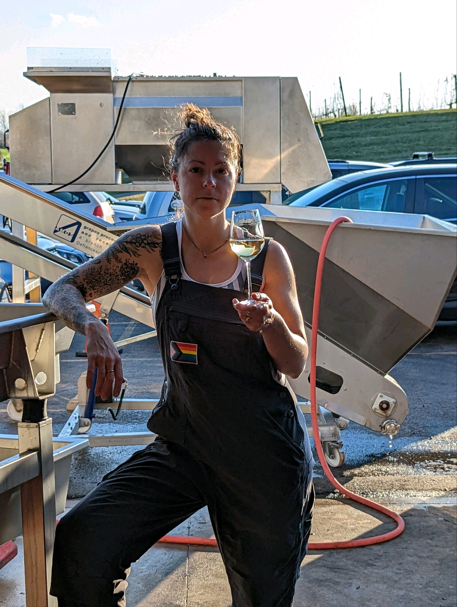
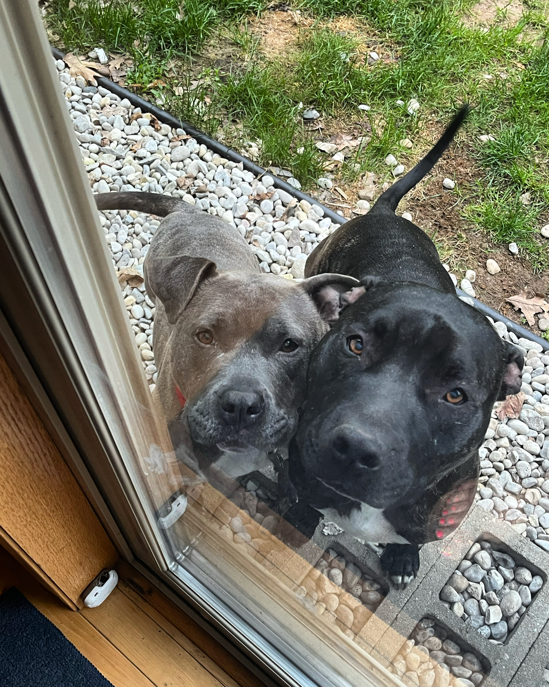

Why Front End?
I have always appreciated the way that form and function can complement one another, and the relationship between design and functionaity in apps and online feels similar. Working on the front end also incorporates my personal enjoyment and strengths of editing and curating a design experience.
Wine Nerd
I started working in restaurants when I was 14. After high school I moved to Chicago, where
a job as a retail cheesemonger introduced me to wine, which I continued to study as I moved into fine dining
service. I worked my first harvest in 2016 and have been making wine in Northern Michigan since 2019. I love
the way that winemaking blends agriculture and chemistry, and the way that wine demonstrates the full and
complicated relationship of an ecosystem and its biology.
Also, it's delicious.
Dog Mama
 I have two adopted fur babies and I love them very dearly.
I got Hank, right, in 2021, and he has made me fall in love with pitbull mixes.
He's three, loves to go running with me, and his favorite places to be are on
your lap with a toy in his mouth and napping with you.
Daisy has been with me since February of 2023. She is chronologically four and a half
but very much still a puppy.
She is a jumping bean who is full of kisses, and don't you dare try to sleep in later than she does.